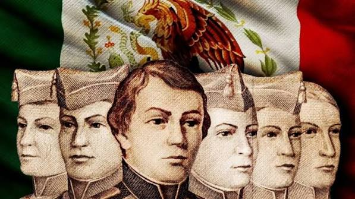
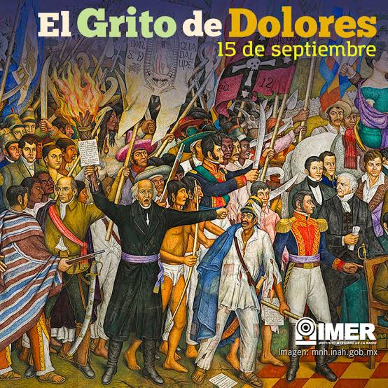
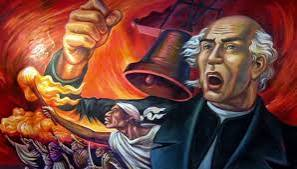
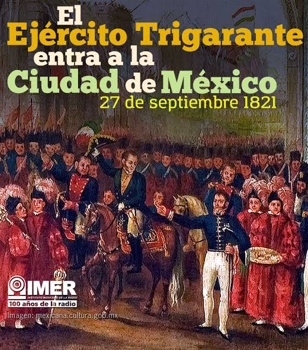

Se conmemora el Día de los Niños Héroes.
Porque el 13 de septiembre de 1847, durante la Guerra entre México y Estados Unidos, seis jóvenes cadetes del Colegio Militar defendieron el Castillo de Chapultepec ante el ejército estadounidense. Los cadetes fueron Juan de la Barrera, Juan Escutia, Francisco Márquez, Agustín Melgar, Vicente Suárez y Fernando Montes de Oca. Se les recuerda por su valentía y por haber dado su vida defendiendo a México.

Se celebra la Noche del Grito de Independencia de México.
Porque la noche del 15 de septiembre de 1810, el sacerdote Miguel Hidalgo y Costilla realizó el llamado Grito de Dolores, convocando al pueblo a levantarse contra el gobierno español. Este acontecimiento marcó el inicio de la Guerra de Independencia de México.

Se celebra el Día de la Independencia de México.
Porque el 16 de septiembre de 1810 comenzó oficialmente la Guerra de Independencia de México, después del llamado realizado por Miguel Hidalgo y Costilla en el Grito de Dolores. Este movimiento buscaba terminar con el dominio español y lograr la independencia del país.

Se celebra la Consumación de la Independencia de México.
Porque el 27 de septiembre de 1821, el Ejército Trigarante, encabezado por Agustín de Iturbide, entró triunfalmente a la Ciudad de México. Este acontecimiento marcó el final de la Guerra de Independencia, después de 11 años de lucha contra el dominio español.
